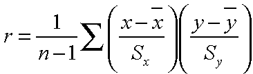

- Introduction
- Pearson Product-Moment Correlation
- Spearman Rank Correlation
- Lagged Correlation
- Autocorrelation
- Significance Tables
Correlation
The correlation is defined as the measure of linear association between two variables. A single value, commonly referred to as the correlation coefficient, is often needed to describe this association.
The value has two special properties. First, most estimates of correlation are bounded by -1 and 1. If the correlation is exactly -1, there is a perfect, negative linear association between the two variables; the scatterplot of the two variables fall along one line with negative slope. Conversely, if the correlation is exactly 1, there is a perfect, positive linear correlation. Secondly, the square of the correlation describes the amount of variability in one variable that is described by the other variable. It should be noted, however, that the correlation coefficient provides no explanation about the physical relationship between the variables.
Caveats / limitations associated with linear correlation:
- Correlation does NOT imply causation or a physical relationship of any kind.
- Correlations are only associated with observed instances of events; further conclusions cannot be inferred from correlations.
- The two datasets must contain similar grids (i.e., independent variables) over which the correlation coefficient is calculated.
The Pearson Product-Moment Correlation
- Pearson product-moment correlation coefficient is the technically correct term for the commonly used term, correlation coefficient.
- Calculated by taking the ratio of the sample covariance of the two variables to the product of the two standard deviations.
 - Illustrates the strength of linear relationships.
- Coefficient is neither robust nor resistant.
- Not robust because strong nonlinear relationships between the two variables may not be recognized.
- Not resistant because it is sensitive to outlying points.
The core of the Pearson correlation coefficient is the covariance between the two variables, or in this case, x and y. Look at the scatterplot below, which illustrates two variables that are positively correlated. The horizontal and vertical lines represent the mean of the data plotted on the y-axis and the x-axis, respectively.
For points in quadrant I, both of the x and y values are larger than their respective means. These points will contribute positive terms to the correlation coefficient. In quadrant III, both the x and y values are less than their respective means, so in the formula for correlation coefficient, the product of the two terms in parenthesis is positive. These points also contribute positive terms to the correlation coefficient. Conversely, points in quadrants II and IV contribute negative terms to the correlation coefficient. Since most of the points fall in quadrants I and III, the correlation coefficient will be dominated by positive terms.
Example: Find the Pearson product-moment correlation between maximum and minimum temperatures at Toyko, Japan for August 1976.
| Locate Dataset, Station and Maximum Temperature Variable |
|
| Select Temporal Domain |
|
| Select Minimum Temperature and Temporal Domain |
|
| Calculate Pearson Product-Moment Correlation Coefficient |
|
Spearman Rank Correlation
- Data is first sorted and each value assigned a rank, 1 assigned to the lowest value.
- Spearman rank calculated by taking the Pearson product-moment correlation of the ranks of the datasets.
- In cases of ties, where a particular data value appears more than once, all equal values assigned their average rank.
- Robust and resistant alternative to the Pearson product-moment correlation because it is less sensitive to outlying values.
- The rank and product-moment correlations will have dissimilar values due to the different sensitivities of the two methods.
Example: Find the Spearman rank correlation between maximum and minimum temperatures at Toyko, Japan for August 1976.
| Locate Dataset, Station and Maximum Temperature Variable |
*NOTE: This example uses the same dataset, variable, and ranges as the previous example.
|
| Select Temporal Domain |
|
| Select Minimum Temperature and Temporal Domain |
|
| Calculate Spearman Rank Correlation Coefficient |
|
Lagged Correlation
- Lagged correlations found by correlating a lagged dataset with another unlagged dataset using the Pearson product-moment method.
- Lagged data computed by shifting data by a certain unit of time, either forward or backward.
- A positive (negative) lag in time refers to a later (earlier) time. For example, in a data set with a monthly time step, a data point in February 2000 lags the January 2000 data point by a +1 month lag.
- Practical in climatology: often greatest correlation between two variables exhibited using a lagged time step.
- A lag-0 system has no lag applied to it.
Example: Find the lagged correlation between sea surface temperature anomalies and the Southern Oscillation Index from January 1985 to December 2003.
| Locate Dataset and Variable |
|
| Select Temporal Domain |
|
| Add the Standardized SLP Difference SOI Index Dataset with Temporal Domain |
|
| Compute Lags and Correlate |
|
| View Results |


|
Autocorrelation
- The correlation between values of the same variable at different times.
- Sometimes referred to as serial correlation.
- Autocorrelation coefficient is calculated by substituting lagged data pairs into the formula for the Pearson product-moment correlation coefficient.
- Autocorrelation function is the collection of autocorrelation coefficients computed for various lags.
- Function always begins with an autocorrelation coefficient of 1, since a series of unshifted data will exhibit perfect correlation with itself.
- Function will decay towards zero as lag increases.
- Used to detect non-randomness in data.
- Used to analyze decorrelation time.
- Indicator of the "memory" or persistence of processes.
- Dimensionless quantity.
- Calculated using a positive lag time.
- Used to analyze the effectiveness of persistence forecasts (forecasts consisting of current observations).
- Persistence forecasts better for processes with long memory than for processes with short memory.
- Autocorrelation function of a long memory process decays to zero more slowly than that of a short memory process.
- Calculated using negative lag time.
- Correlation between the persistence forecast and the verifying observation is called the correlation skill score.
Example: Calculate the autocorrelation function and correlation skill score of the NINO 3.4 Index from January 1856 to December 1998.
| Locate Dataset and Variable |
|
| Select Temporal Domain |
|
| Calculate Autocorrelation Function |
*Note that the shiftdatashort function will shorten the range over which the two variables will be correlated. For instance, a -36 lag will correlate values starting at January 1859 because 36 months (3 years) of data were moved foward. |
| View Autocorrelation Function |

|
| Find Correlation Skill Score for Individual Lags |
|
Significance Tables and Correlation
- Used to determine minimum threshold for the correlation coefficient at a given significance level and degree of freedom.
- The 90%, 95%, 98% and 99% two-tailed significance levels of the correlation coefficient are listed in the table below (assuming normally distributed datasets).
- Note that the degrees of freedom (df) = n - 2 for a sample of size n.
| df |
90% |
95% |
98% |
99% |
| 4 |
.729 |
.811 |
.882 |
.917 |
| 6 |
.622 |
.707 |
.789 |
.834 |
| 8 |
.549 |
.632 |
.716 |
.765 |
| 10 |
.497 |
.576 |
.658 |
.708 |
| 12 |
.458 |
.532 |
.612 |
.661 |
| 14 |
.426 |
.497 |
.574 |
.623 |
| 16 |
.400 |
.468 |
.542 |
.590 |
| 18 |
.378 |
.444 |
.516 |
.561 |
| 20 |
.360 |
.423 |
.492 |
.537 |
| 25 |
.323 |
.381 |
.445 |
.487 |
| 30 |
.295 |
.349 |
.409 |
.449 |
| 35 |
.275 |
.325 |
.381 |
.418 |
| 40 |
.257 |
.304 |
.358 |
.393 |
| 45 |
.243 |
.288 |
.338 |
.372 |
| 50 |
.231 |
.273 |
.322 |
.354 |
| 60 |
.211 |
.250 |
.295 |
.325 |
| 70 |
.195 |
.232 | .274 |
.302 |
| 80 |
.183 |
.217 |
.256 |
.283 |
| 90 |
.173 |
.205 |
.242 |
.267 |
| 100 |
.164 |
.195 |
.230 |
.254 |
| 200 |
.116 |
.138 |
.164 |
.181 |
| 300 |
.095 |
.113 |
.134 |
.148 |
| 400 |
.082 | .098 |
.116 |
.128 |
| 500 |
.073 |
.088 |
.104 |
.115 |
Example: Find the correlation between average summer (JJA) Sahel rainfall and sea surface temperature anomalies during the time period 1983-1999, and then make a plot of correlation coefficients significant to the 90% level.
| Locate Dataset and Variable |
|
| Select Temporal and Spatial Domains |
|
| Compute Summer Rainfall Averages |
|
| Compute Spatial Average |
|
| Add Reyn_Smith Sea Surface Temperature Anomaly Dataset and Correlate with Precipitation Data |
|
| Calculate the 10% Significance Level of the Correlation Coefficient and View Results |


|